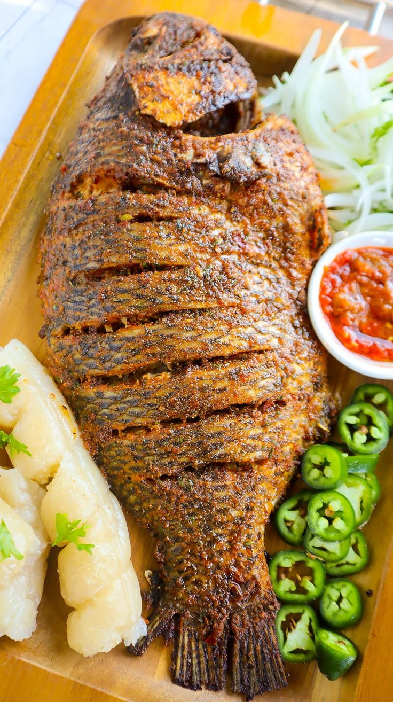

Tilapia Fish Stew

Description
This is a recipe for Tilapia fish stew
Tilapia is a popular breed of fish from the lake side city of Kisumu in Kenya. Bon Appetit!
Ingredients
- 2 medium onions, grated into fine pieces
- 50 ml of vegetable oil
- 2 garlic cloves, grated
- 1tsp ginger, grated
- 1 tsp tomato paste
- 2 large tomatoes, blended
- 1 tsp cumin seeds
- 1 tsp smoked paprika (optional)
- 1.5 tsp curry powder
- 500 ml vegetable stock
- 1 kg tilapia fish, cut into steaks (cleaned and patted dry with a paper towel)
- 1 mixed bell pepper, sliced (yellow and red, or green)
- 15 ml coconut cream (optional)
- 1 tablespoon fresh coriander stems, chopped. (or 1 tsp coriander seeds)
- 20 grams, fresh coriander leaves, for garnishing
- Salt to taste
Steps
- Heat the vegetable oil in a large pan and fry the cumin for a minute until fragrant, then add in the onions. Cook for 5 minutes until golden brown.
- Add in the garlic and ginger, cook for two minutes, while stirring, until the raw smell of garlic is gone.
- Next, add the tomatoes, and tomato paste, cook for two minutes, then add the coriander stems or coriander seeds.
- Add the paprika and mild curry powder, then add 500ml vegetable broth to the spicy tomato mix.
- Time to add in the clean fish. Cook for 10 minutes, and then add the bell peppers.
- Drizzle the coconut cream onto the simmer fish stew
- Cover and cook for 15 minutes in medium heat.
- Garnish with coriander leaves
- Your East African Tilapia Fish Stew is ready to serve, that is, if you didn't taste it all while cooking.
- Serve with hot ugali or rice.